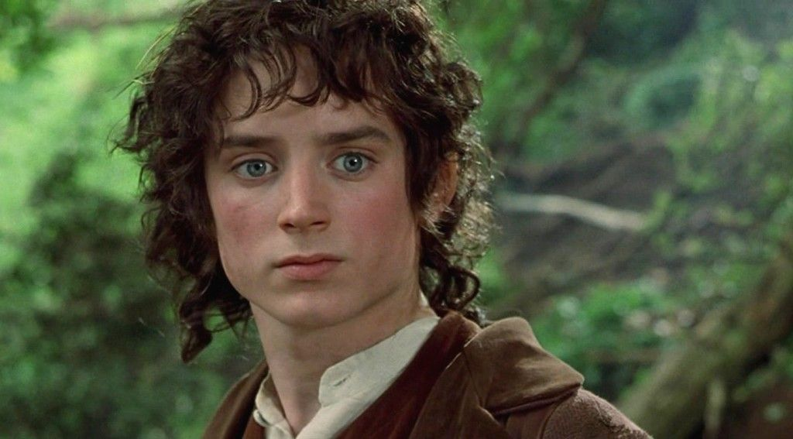
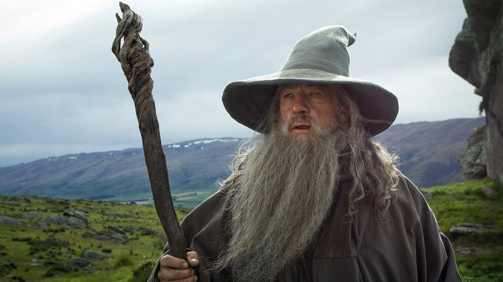
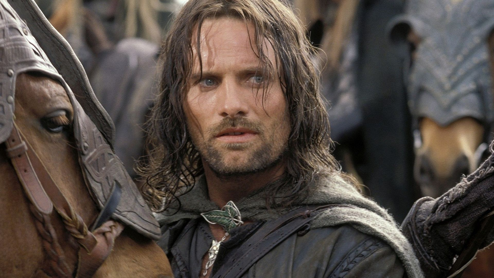

Frodo Bolsón
Es un hobbit, hijo de Drogo Bolsón y Prímula Brandigamo, nacido el 22 de septiembre de 2968 de la Tercera Edad del Sol. El 22 de septiembre del año 3001, Frodo cumple la mayoría de edad (que entre los hobbits es de 33 años), y pasa a posesión oficial de la herencia de su tío Bilbo. Entre la herencia que Bilbo dejó a Frodo se encuentra un extraño anillo. EN 3018, Gandalf tiene la certeza de que el anillo de Frodo es el Anillo Único, y le advierte al hobbit sobre el peligro que corre al tenerlo, ya que su dueño Sauron desea recuperarlo.
Gandalf
Es un istar (‘mago’), uno de los espíritus maia enviados a la Tierra Media durante la Tercera Edad del Sol para ayudar a sus habitantes en la lucha contra el «señor oscuro» Sauron. Allí adoptó el aspecto de un anciano de barba larga y de color blanca grisácea, vestido con una gran capa gris, un sombrero puntiagudo de color azul y un gran cayado. Es conocido por muchos nombres en la Tierra Media; según sus propias palabras: «Mithrandir entre los elfos, Tharkún para los enanos; Olórin era en mi juventud en el Oeste que nadie recuerda, Incánus en el Sur, Gandalf en el Norte; al Este nunca voy».
Tras descubrir que el anillo de Bilbo es el Anillo Único, le urge que se lo entregue a su sobrino, Frodo Bolsón y a este a emprender camino hacia Rivendel para poner el Anillo a salvo. Mientras, se reune con Saruman en a la torre de Orthanc, donde descubre entonces su alianza con Sauron, y donde le ofrece a Gandalf que se una, pero rechaza la oferta y es apresado en lo alto de la torre.
Aragorn
Aragorn se unió a Frodo Bolsón en la posada de El Póney Pisador en Bree, que había salido de la Comarca para llevar el Anillo Único a Rivendel. Aragorn, tenía entonces 87 años, estando en plena madurez para uno de descendencia real númenóreana. Una vez en Rivendel, Frodo se ofreció como voluntario para destruir el Anillo en los fuegos del Monte del Destino, y Aragorn fue elegido como miembro de la Comunidad del Anillo para acompañarlo, junto con Gandalf, Legolas, Gimli, Boromir de Gondor y los hobbits Pippin, Merry y el fiel jardinero de Frodo, Samsagaz Gamyi.